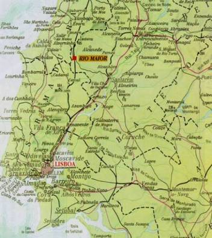

1 st Conference on Sport Management and Economics
of the
Sport Sciences Higher School of Rio Maior
Rio Maior 5 and 7 July 2002
We assume that all participants will arrive to the Lisbon airport. There will be somebody (almost sure a student of the Rio Maior school) waiting for you. He/she will transport you by car to the hotel at Rio Maior. The small city of Rio Maior is at the outskirts of Lisbon, at 1 hour by car. We need information on your travel in order to be waiting for you. Do not try to travel by taxi from the airport to Rio Maior because it is expensive.
The conference organization will have a shuttle at airport depart at 12h and 18h of 4July.
|  |
If you want to travel alone we suggest you to travel by bus http://www.rede-expressos.pt/ index_uk.htm.
The local of departure at Lisbon is REDE NACIONAL DE EXPRESSOS (National Bus Companies) AV.DUQUE D'ÁVILA Nº12 - TERMINAL DO ARCO DO CEGO - Phone: 00 351 213 545 439
Organization contacts:
CPBarros
918822640 (cellular-phone)
Santos, Abel
967077873 (cellular-phone)
Secretariat:
Rua José Pedro Inês Canadas Lote 1º, R/ch
2040-326 Rio Maior
Tel.: 00 351 243 999 280
Fax. 00 351 243 999 289